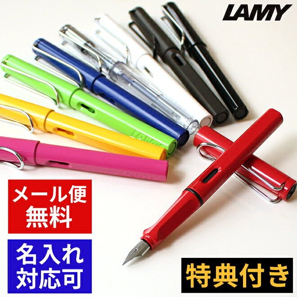
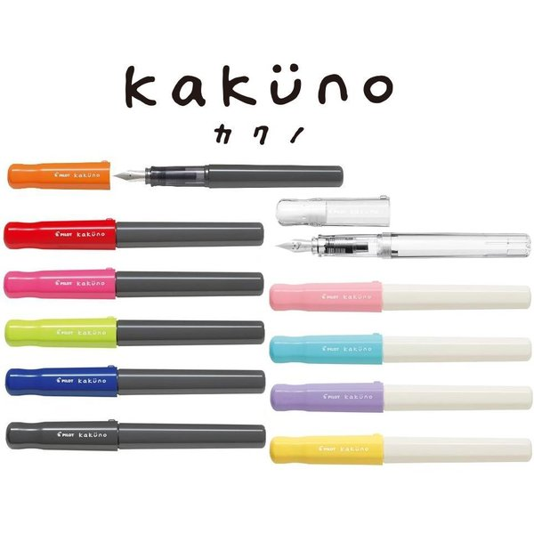
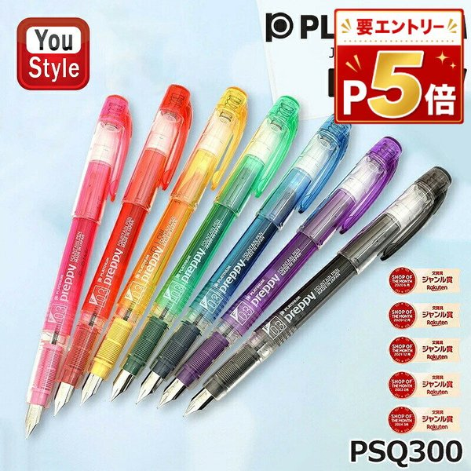
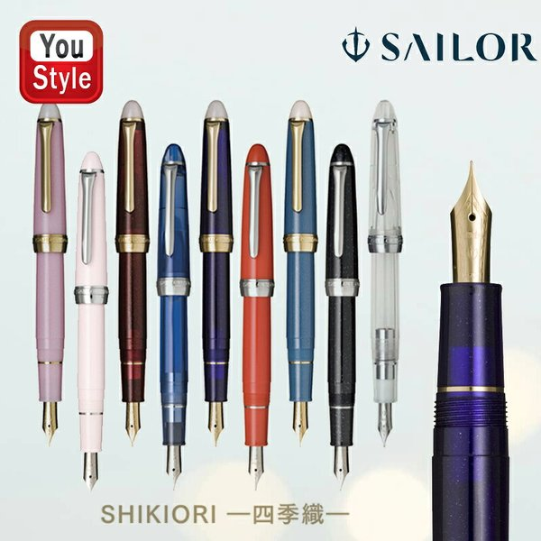
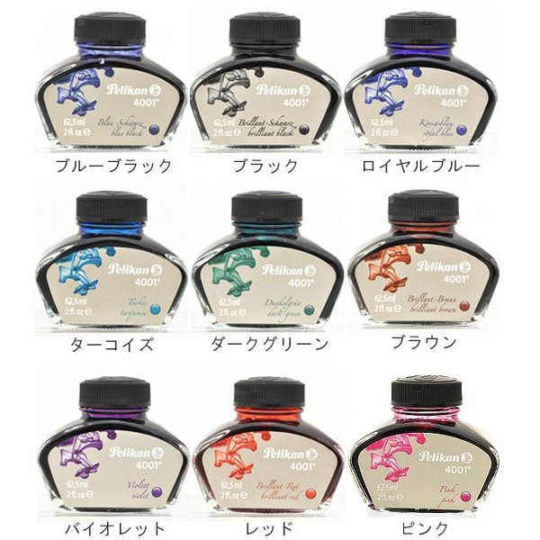
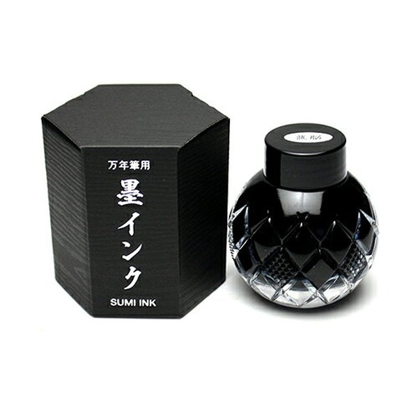
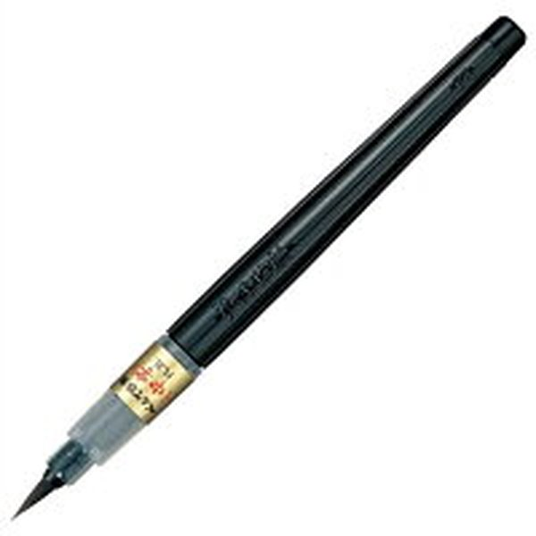
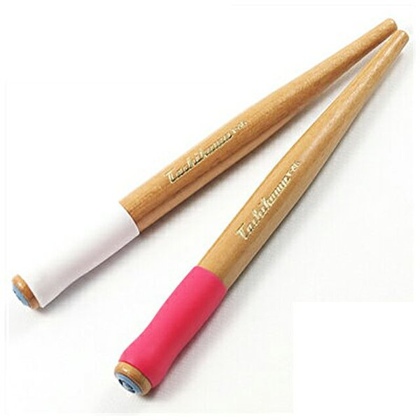
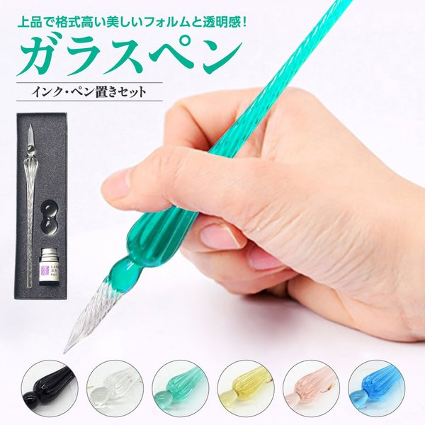
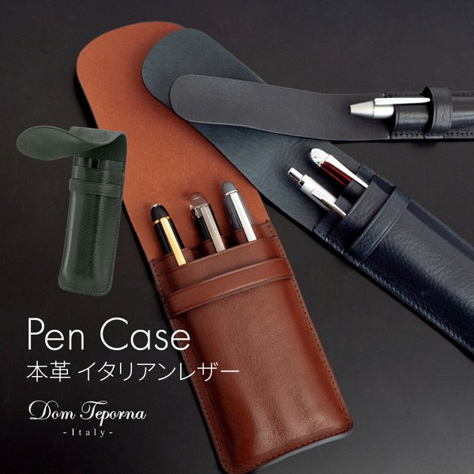

【2026年・万年筆＆ガラスペン10選】ラミー サファリ・パイロット カクノ・プラチナ プレピー・セーラー 四季織・ペリカン 4001・呉竹 墨インク・ぺんてる 筆ペン・タチカワ フリーペン軸・ガラスペンセット・本革ペンケースを実売価格で比較
万年筆を1本持つと、手書きの量が変わります。インクが紙に乗る感覚があると、走り書きのメモでも少し丁寧に書こうと思えるものです。ガラスペンはインクを浸して書く手間があるぶん、手紙やカードを書く時間そのものを楽しめます。
選ぶ軸は3つです。まずペン先。細字は手帳や書類、中字は手紙や日記に向き、硬めのペン先は速く書いても線が安定します。次にインクの入れ方。カートリッジは差すだけで手軽、コンバーターは瓶インクを吸って色を選べます。最後に持ち歩き方。ペンケースに入れるとペン先を守れ、鞄の中でもインク漏れを防げます。
本記事では、楽天市場で人気・高評価の万年筆・ガラスペン・筆記具10選を、実売価格とレビュー評価つきで写真付き紹介します。
- おすすめ10選 スペック・特徴比較表
- BEST 1｜ラミー サファリ 万年筆
- BEST 2｜パイロット カクノ 万年筆
- BEST 3｜プラチナ プレピー 万年筆 PSQ-300
- BEST 4｜セーラー 四季織 万年筆
- BEST 5｜ペリカン ボトルインク 4001 62.5ml
- BEST 6｜三田三昭堂×呉竹 墨インク 万年筆用
- BEST 7｜ぺんてる 筆ペン 中字 XFL2L
- BEST 8｜タチカワ フリーペン軸 T-36 ラバーグリップ付
- BEST 9｜ガラスペン インクセット ペンスタンド付き
- BEST 10｜DomTeporna 本革ペンケース 1本差し
- 【読者負担0円】買わなくても得する無料サービス
- まとめ：万年筆・ガラスペン10選の選び方
| 順位 | 商品名 | ブランド | 最大の特徴・おすすめ理由 | 総合評価 |
|---|---|---|---|---|
| BEST 1 | ラミー サファリ 万年筆 | ラミー（LAMY） | 硬めのペン先で細かい文字が書きやすい | 4.61 |
| BEST 2 | パイロット カクノ 万年筆 | パイロット（PILOT） | 六角軸で机の上で転がらない | 4.74 |
| BEST 3 | プラチナ プレピー 万年筆 PSQ-300 | プラチナ万年筆（PLATINUM） | カートリッジを挿すだけで使える | 4.60 |
| BEST 4 | セーラー 四季織 万年筆 | セーラー万年筆（SAILOR） | 季節をテーマにした軸の色 | 4.68 |
| BEST 5 | ペリカン ボトルインク 4001 62.5ml | ペリカン（PELIKAN） | 定番色が揃った62.5ml瓶 | 4.62 |
| BEST 6 | 三田三昭堂×呉竹 墨インク 万年筆用 | 呉竹（三田三昭堂） | 香り付きで書く時間が楽しい | 4.67 |
| BEST 7 | ぺんてる 筆ペン 中字 XFL2L | ぺんてる | 筆のような強弱のある線が書ける | 4.72 |
| BEST 8 | タチカワ フリーペン軸 T-36 ラバーグリップ付 | タチカワ | Gペンや日光のペン先が使える | 4.77 |
| BEST 9 | ガラスペン インクセット ペンスタンド付き | エミューカラー | インクに浸すだけで書ける | 4.59 |
| BEST 10 | DomTeporna 本革ペンケース 1本差し | DomTeporna Italy | 本革で使うほど手になじむ | 4.52 |
ラミー サファリ 万年筆

ラミーのサファリは、樹脂の軸にクリップが付いた万年筆です。ペン先が硬めで、力を入れずに書いても線がはっきり出るので、手帳やメモの細かい文字に向いています。カートリッジとコンバーターの両方が使えるので、インクを選んで楽しめます。楽天市場での実売価格は約3,098円（2026年11月時点）。
- 硬めのペン先で細かい文字が書きやすい
- カートリッジもコンバーターも使える
- 色が多く、自分の1本を選べる
- 軸の断面が角ばっているので、長く書くと指の当たる場所が気になる
パイロット カクノ 万年筆

パイロットのカクノは、軸が六角形で転がりにくい万年筆です。ペン先に顔が描かれていて、万年筆を初めて持つ人でも扱いやすいように作られています。透明軸はインクの残りが見えるので、補充のタイミングが分かります。楽天市場での実売価格は約880円（2026年11月時点）。
- 六角軸で机の上で転がらない
- 初めてでも扱いやすい設計
- 透明軸でインクの残量が見える
- 軸が軽いぶん、重さのある万年筆に慣れた人には頼りなく感じる
プラチナ プレピー 万年筆 PSQ-300

プラチナ万年筆のプレピーは、樹脂軸の入門モデルです。ペン先がステンレスで、細字と中字から選べます。カートリッジを差し込むだけですぐ書けて、キャップは密閉性が高く、数日置いてもインクが乾きにくい作りです。楽天市場での実売価格は約435円（2026年11月時点）。
- カートリッジを挿すだけで使える
- 細字と中字から選べる
- キャップの密閉性が高く乾きにくい
- 軸が軽く、高級万年筆のような重みはない
セーラー 四季織 万年筆

セーラー万年筆の四季織シリーズの万年筆です。日本の季節を色にした軸で、ステンレスのペン先が付いています。細字と中細を選べ、手紙や日記のように長く書く場面でも線の太さが安定します。楽天市場での実売価格は約7,700円（2026年11月時点）。
- 季節をテーマにした軸の色
- 細字と中細を選べる
- 日本製のペン先で書き味が安定する
- 軸の塗装が繊細なので、硬いものと一緒に持ち歩くと傷が付く
ペリカン ボトルインク 4001 62.5ml

ペリカンの定番ボトルインク「4001」です。ブルーブラックやブラックなど、書類にも手紙にも使える色が揃っていて、62.5mlの瓶入りです。染料インクなので、長く使ってもペン先に詰まりにくく、最初の1本目のインクに向いています。楽天市場での実売価格は約1,485円（2026年11月時点）。
- 定番色が揃った62.5ml瓶
- 染料インクで詰まりにくい
- 瓶の口が広くコンバーターで吸いやすい
- レビューが42件と50件未満なので、色味は実際に書いて確かめたい
三田三昭堂×呉竹 墨インク 万年筆用

三田三昭堂と呉竹が組んだ万年筆用の墨インクです。龍脳や麝香、伽羅といった香りが付いていて、書いたときにほのかに香ります。墨ならではの黒の深さがあり、筆文字のような線を万年筆で書きたい人に向いています。楽天市場での実売価格は約4,130円（2026年11月時点）。
- 香り付きで書く時間が楽しい
- 墨の深い黒が出る
- 万年筆用に調整されたインク
- レビューが49件と50件未満なので、香りの強さは好みが分かれる
ぺんてる 筆ペン 中字 XFL2L

ぺんてるの筆ペンの中字です。軸を押すとインクが出て、筆のような強弱のある線が書けます。年賀状の宛名や一筆箋の短い文章に向いていて、使い切ったらカートリッジを替えて長く使えます。楽天市場での実売価格は約357円（2026年11月時点）。
- 筆のような強弱のある線が書ける
- 中字で名前や宛名が書きやすい
- カートリッジ式で長く使える
- インクが乾きやすいので、使い終わったらキャップを閉める
タチカワ フリーペン軸 T-36 ラバーグリップ付

タチカワのフリーペン軸です。Gペンや日光のペン先を差し替えて使う、つけペン用の軸で、ラバーグリップが付いていて長く持っても滑りにくい作りです。木の質感があるので、万年筆とは違う手触りで字を書けます。楽天市場での実売価格は約858円（2026年11月時点）。
- Gペンや日光のペン先が使える
- ラバーグリップで滑りにくい
- 価格が安く初めてのつけペンに向く
- レビューが13件と50件未満なので、グリップの硬さは実際に持って確かめたい
ガラスペン インクセット ペンスタンド付き

ガラスペンとインクのセットです。ガラスの軸に溝が切ってあり、インクに浸すと溝に液がたまって、しばらく書き続けられます。付属のインクは色数が多く、手紙やイラストの色を変えながら書けます。楽天市場での実売価格は約1,099円（2026年11月時点）。
- インクに浸すだけで書ける
- 付属インクの色数が多い
- 洗えば何度でも使える
- ガラス製なので落とすと割れる。持ち運びは付属の箱に入れる
DomTeporna 本革ペンケース 1本差し

イタリアンレザーを使った本革のペンケースです。1本差しのスリムな形で、万年筆を入れたまま鞄に入れられます。内側に仕切りがあり、ペン先がケースの内側に触れにくい作りです。楽天市場での実売価格は約2,980円（2026年11月時点）。
- 本革で使うほど手になじむ
- スリムで鞄の隙間に入る
- ペン先を守る仕切り付き
- 1本しか入らないので、複数本を持ち歩く人には足りない
この記事の商品を買う前に、まずは無料で得する選択肢をチェック。どれも登録・利用は0円で、無料期間中に解約すれば料金はかかりません。読みたい雑誌がある人、ポイントを貯めたい人、アンケートなら気軽という人、それぞれに合うものを選べます。
初回31日無料・無料期間中に解約すれば0円 → 楽天ポイントモール｜登録無料で毎日ポイ活
買い物なしでもポイントが貯まる無料サービス → 楽天インサイト｜アンケートに答えてポイント
登録無料・すきま時間のアンケートで貯まる → 楽天カード｜年会費永年無料
新規発行・年会費ずっと0円 →
4つのサービスの違いと使い分けは「出費0円で得する！買わずにポイントが貯まる無料サービス厳選4選」でまとめています。
💡 まとめ：万年筆・ガラスペン10選の選び方
万年筆は、書き方と持ち歩き方を決めてから選ぶと長く使えます。細かい文字が多いならラミーのサファリかパイロットのカクノ、初めてで手軽さを優先するならプラチナ万年筆のプレピー、季節の色を楽しむならセーラーの四季織。インクはペリカンの4001が最初の1本目に向き、墨の黒と香りを求めるなら呉竹の墨インク。筆文字の強弱が欲しいときはぺんてるの筆ペン、つけペンで線の強弱を出すならタチカワのフリーペン軸、手紙やイラストの色を変えるならガラスペンとインクのセットです。持ち歩くときはDomTepornaの本革ペンケースに入れると、ペン先を傷めずに済みます。まず1本と1色から始めて、書く場面が増えたら道具を足していくのが、飽きずに続けられる揃え方です。
楽天市場では「5と0のつく日」や「お買い物マラソン」などのキャンペーンに合わせて購入すると、ポイント還元が最大化してお得に手に入ります。ぜひチェックしてみてくださいね。